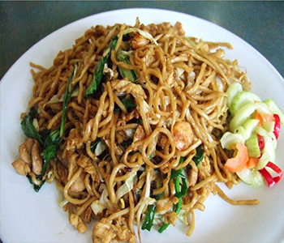

Bahan:
- 1 sdt saus tiram
- kecap manis, kecap asin
- 1 bungkus mi telu
- sesuai selera sayur : wortel, kubis
- sesuai selera lauk : ayam, udang, bakso, telur
- 1/2 tomat, potong kecil
Bumbu Halus:
- 4 siung bawang putih
- 1/4 sdt pala
- 1/2 sdt merica
- 1 sdt garam
- 1 bawang merah besar, iris tipis
- 3 cabe rawit, iris
- 2 batang daun bawang, iris tipis
Bumbu Halus:
- 4 butir bawang putih
- 8 buah bawang merah
- 3 cm kunyit
- 5 butir kemiri
- 1 cm jahe
- 2 sdt ketumbar bubuk
- 2 sendok teh garam
- 1 sendok makan gula merah / Jawa
- 1 sendok teh asam Jawa
- 1 batang serai
Cara Membuat:
- Rebus mi telur selama 3 menit, tiriskan
- Tumis bumbu halus dan bawang merah sampai harum, masukkan potongan tomat, cabe rawit dan saus tiram..
- Masukkan ayam, udang, telur, bakso tumis hingga matang.
- Masukkan sayuran wortel dan kubis, tumis hingga agak layu..
- Masukkan mi telur, aduk hingga rata. Tambahkan kecap manis dan kecap asin sesuai selera.
- Tambahkan irisan daun bawang, aduk hingga rata..